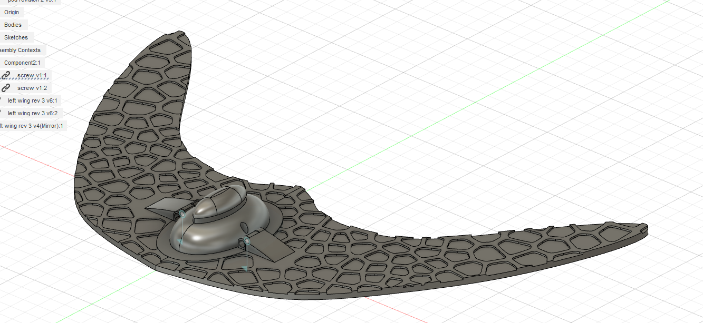

Rover Escape Pod
Designs Using Biomimicry, Dec 7, 2023
This project invovles using bioinspiration and the TRIZ framework to create an ejection pod system for a rover. For a video summary of the project, please watch the video below.
The initial design was based after the Alsomitra Macrocarpa, a type of seed which glides down to the floor from high altitudes using the large surface area of its 'wings'.

The initial idea for the wings was to have them made of a fabric, however when we consider the weight of the pod itself it would be a much wiser idea to have solid wings for improved stability, and a method of storing these wings. To improve wing strength, I looked at the wings of locusts which use their veins as a method of improving wing strength, while not increasing weight. To mimic this, a Voronoi generator was used to create a similar effect.
We also need a method to reduce the impact force. As the speed of the pod increases, we want to make sure the volume of our object isn’t affected in a negative way. Using the TRIZ matrix, we’re led to looking at the theory of a nested doll. Placing multiple objects inside of each other. Interestingly, this is the same principle seen in toucan beaks. Toucan beaks have a very strong thin outer shell, which has a thick lining of foam on the inside to absorb shock. The rest of the beak is empty to make the structure lightweight. To emulate the hard outer shell, the pod has been constructed out of an aluminium shell, which is both durable and lightweight.
The actual launcher for the pod went through several different iterations, in the final version the ejector holds the wings up at a 35 angle. 4 cylinders are used to hold them up, while also stopping the pod from accidentally leaving the rover. A claw at the back holds the pod in place before lift-off. The spring-loaded mechanism will launch the pod forward. Once it reaches a specific point on the runway, The catapult is powered by a motor and will then launch the pod up vertically. As the pod is in mid air, the wings will then hold outwards to allow it to glide. Magnets are used in the wings to hold them outwards, so they don’t retract back inwards. Launching it into the air and allowing it to glide. 2 springs are used on hinges of the wings.
To test the structural stability of the pod, several instances of Finite Element Analysis were used, including both static and dynamic as seen below. More information about this project can be found with the video listed above.